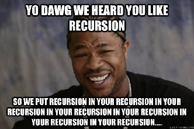
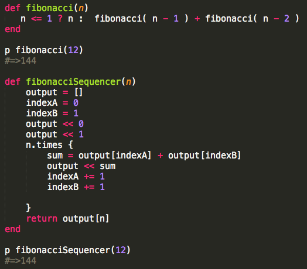
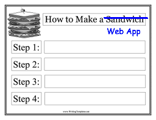

- student: DBC
- mkt mgr + product liaison: TRLA
- timcannady@gmail.com
- twitter.com/tcannadysf
- linked.com/in/timcannady
- github.com/timcannady
WebDev
Tech Grab Bag: ActiveRecord, Recursion, RegEx and Rails
A grab bag! That's what happens when asked to select just one topic from a list of many!
On one hand maybe it's best to do a deeper dive in one topic than skim a a few. On the other, I feel all these topics are important, and I don't really know anything about them. So an executive decision was made to do a high-high-level review of each. That way I'll at least know what I'm getting into when we get into them. And perhaps this can be of value to others who are at a similar level.
ActiveRecord
I began with knowing nothing about AR. I only chose it because I've seen the name a few times. And I remember having a feeling of, "this sounds important."
ActiveRecord is what's called an ORM, or an Object-Relational Mapping. Its name refers to the Active Record Pattern identified by Martin Fowler. So it's kind of a program whose name shares likelihood with an industry theory, if that makes sense. It's also the "M" in MVC, being Model-Control-Viewer - something I know is important but am yet to get learn about.
What does AR do? Quite a lot. And it's somewhat hard for me to understand all the benefits because I'm new to SQL and have never touched Rails - both of which AR works closely with. That said, I understand the parts where it does the translations between Ruby objects and their database. For example, let's say a website rents out DVDs and the owner wants to display the most recent. Assuming they're already listed in his database, he'd normally have to do a significant SQL query to sort-by release date and return the most recent. However with AR, all he has to do is something like: 'movie = Movie.last', where Movie is an object created using AR piggy-backed in Ruby (at least that's what it looked like).
This is possible because AR provides an object-oriented interface the database, making it much easier to interact with. And that's about it! When working with the database, "AR knows what you want, composes the SQL query for you, submits it, parses the output and puts in a handy Ruby object for you to use."
Recursion
I look forward to day when my reaction to recursion isn't, "ugh". What I've gathered is that it's hard for people to explain, it has something to do with the rapper Xzibit, and I'm not sure if it is best friends with closures, high-order functions and call-back functions. I honestly put them all in the same bucket until further inspection. Guilty until proven innocent.

I know a little more than that, and I should also know better than that. I bet recursion is an important tool. Otherwise the discussions wouldn't be so rampant. If it has haters, it means it's doing something right, right?
Enough Exzibit talk. Recursion is best broken into two ideas:
- In real life terms: recursion is the process of repeating items in a self-similar way. Like a hall of mirrors, a stack of Russian Dolls, or fractal art
- In programming terms: recursion uses this self-repeating theory and applies it to computer science. For example, imagine a function can calls itself
Below is an example in Ruby. Both methods output the n-th number in a Fibonacci Sequence. However the first approach uses recursion:

I only built fibonacciSequencer() but don't really understand what fibonacci() is doing. But I'll try to deduce at least one learning point: when I find myself doing something over and over to the input (in this example: "n"), then recursion might be the ticket.
RegEx
RegEx: that thing we're never allowed to use. Just kidding though. Well, sort of. There's something to be said for a tool that a lot of people say is best used in moderation.
'RegEx' is short for 'regular expression,' and is all about pattern-matching. It's typically used to search for something in a data set. For example, you might want to remove all the spaces in a string, remove the zeroes in an array, or convert exclamation points to double-exclamation points. So it's worth noting RegEx can search for any character type and is traditionally used to either search for, or update, the result.
I think the reason people suggest to use in moderation is because programs empower us with tools, for example loops and iterators, that are potentially better to use. At least academically speaking.
RegEx statements typically use delimiters like '/', so when you see something similar to /[a-w&&[^c-g]z]/, think RegEx.
Rails
I know more about Rails' gossip than I do about Rails itself. It's like I've read all the National Inquirer articles, but I haven't invited it for coffee. People just love to talk about it. Here's what the first couple results looked like when I Google'd 'ELI5 Ruby on Rails':
- Ruby is a language, Rails it the framework
- Rails is to Ruby as Django is to Python
- Rails' router is AWESOME via responders
- Rails is like Subway Sandwiches
Perhaps each of these replies is sufficient for a particular audience, but most of them don't help a beginner like me. Except the Subway one. That's the one that got me.
The Subway explains how Subway is for sandwiches as Rails is for Ruby. Subway offers "sandwich frameworks," being generally-accepted sandwich combinations. There's a bunch of different flavors and a couple of customization options, but in a world of endless possibilities, Subway distills the most popular.

Here's how it relates to deploying web apps: "A web framework is the Subway of web development. Developers of RoR know that most web applications have certain features and functions, so they package them together and organize them so that most of the code you have to write is custom code for your unique application instead of having to write basic necessary features from scratch. This allows you to make web apps very quickly and easily."
So it lays the groundwork for mundane things like generating HTML code, handling connections to databases and serving webpages. When thinking of 'a framework,' perhaps it's best to think 'a template.' But in this case it's a template for deploying the site/app itself, not a sandwich or an html document.